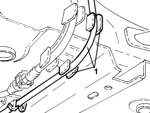
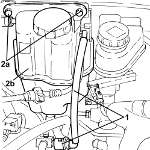
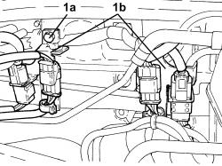
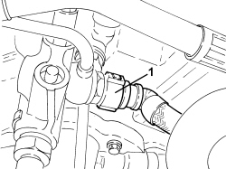
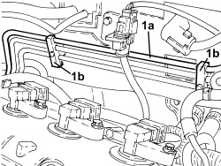
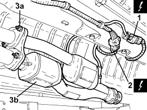
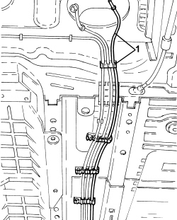

1040B30 FUEL SUPPLY PIPE (ONE) - R.R.
- Path
- Procedures > 10 ENGINE > 1040 FUEL TANK AND PIPES > 1040B FUEL SUPPLY/RETURN CIRCUIT PIPE > 1040B30 FUEL SUPPLY PIPE (ONE) - R.R.
- Kind
- repair procedure (removal / refitting; the operation number is the code)
- Applies to
- engines: 1.9 JTS, 2.2 JTS, 3.2 JTS; all production periods
- Interactive page
- https://sloeber94.github.io/elrnDB/alfa/159/en/#/939010499
Applies to: engines: 1.9 JTS, 2.2 JTS; all production periods
 Removing
Removing
 Refitting
Refitting
Applies to: engines: 1.9 JTS, 2.2 JTS; all production periods

Applies to: engines: 1.9 JTS, 2.2 JTS; all production periods

Applies to: engines: 3.2 JTS; all production periods
Removing
RefittingOp. 4450B13 REAR WHEELS (TWO) - R.R
Op. 2720C10 DIFFERENCIAL UNIT - R.R.
Op. 2410A18 TRANSMISSION WITH JOINTS INCLUDED - R.R.
Op. 7050A20 ONE-PIECE REAR SEAT CUSHION - R.R.
Op. 1040A10 FUEL TANK - R + R AND DECANT FUEL
Op. 1040E22 FUEL PIPE PROTECTION - R.R
Op. 1072B50 AIR CHAMBER - R.R.
1. Undo the fixing nuts and move the engine coolant reservoir to one side.

Applies to: engines: 3.2 JTS; all production periods
1. Disconnect the fuel supply pipe rapid connector, pressure pump rigid inlet pipe side.

Applies to: engines: 3.2 JTS; all production periods
1. Release the rigid section of the fuel supply pipe (1a) from the fastening clips (1b).

Applies to: engines: 3.2 JTS; all production periods
- Undo the fastenings and remove the electrical connections protection.
1. Disconnect the electrical connection for the left head Lambda sensor catalyzer.
Description | Connector | |
|---|---|---|
1 | Lambda sensor on catalyzer 2 |
2. Disconnect the electrical connection for the right head Lambda sensor catalyzer.
Description | Connector | |
|---|---|---|
2 | Lambda sensor on catalyzer |
3. Undo the nuts (3a) and remove the catalyzer assembly (3b).
- Remove the metal gaskets.

Applies to: engines: 3.2 JTS; all production periods
1. Undo the bolts and remove the front section of the exhaust from the left head precatalyzer.
- Remove the metal gasket.

Applies to: engines: 3.2 JTS; all production periods
1. Release the fuel supply pipe from the underbody fastenings and remove it.

Applies to: engines: 3.2 JTS; all production periods
Refitting
Removing- Place the fuel supply pipe in position, secure it to the bodyshell using the clips and connect it to the pressure pump rigid inlet pipe.
- Place the front section of the exhaust and the gasket in position and connect it to the precatalyzer using the bolts.
- Place the catalyzer assembly and gaskets in position and connect it to the two front exhaust pipes using the fixing nuts.
- Connect the electrical connections for the two Lambda sensors and fit the protection.
- Place the engine coolant reservoir on its bracket and secure it using the nuts.
Op. 1072B50 AIR CHAMBER - R.R.
Op. 1040E22 FUEL PIPE PROTECTION - R.R
Op. 1040A10 FUEL TANK - R + R AND DECANT FUEL
Op. 7050A20 ONE-PIECE REAR SEAT CUSHION - R.R.
Op. 2410A18 TRANSMISSION WITH JOINTS INCLUDED - R.R.
Topics linked from this page (9)
- 1040A10 FUEL TANK - R + R AND DECANT FUEL
- 1040E22 FUEL PIPE PROTECTION - R.R
- 1072B50 AIR CHAMBER - R.R.
- 2410A18 TRANSMISSION WITH JOINTS INCLUDED - R.R.
- 2720C10 DIFFERENCIAL UNIT - R.R.
- 4450B13 REAR WHEELS (TWO) - R.R
- 7050A20 ONE-PIECE REAR SEAT CUSHION - R.R.
- K017 LAMBDA SENSOR ON CATALYZER
- K018 LAMBDA SENSOR ON CATALYZER - 2